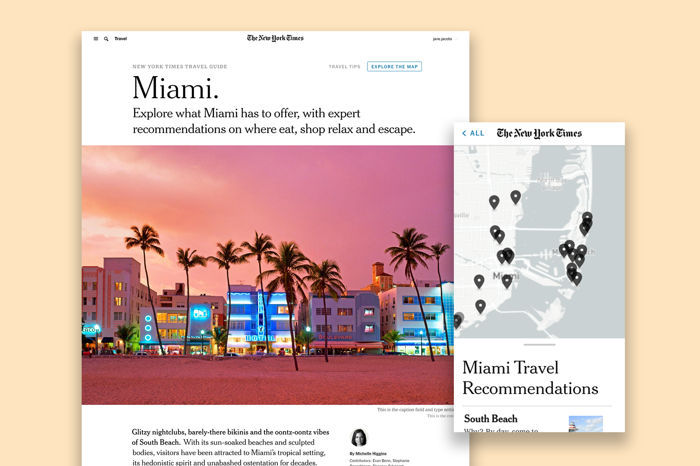
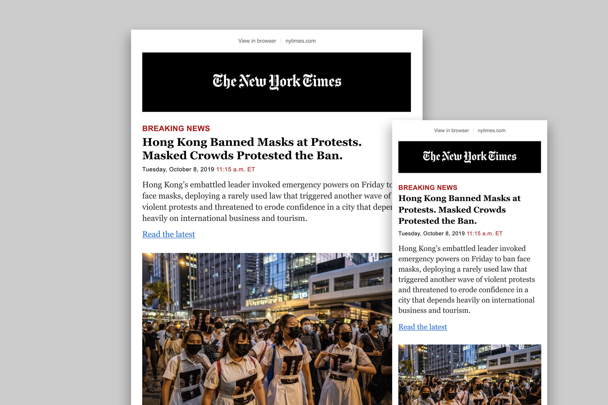

Johna Mandel used to do product design. She still does but she used to, too.

Challenges for Readers; Led design to create a new reusable storytelling format.
Challenges help readers achieve a goal through a series of small tasks. The concept existed at the Times already, but had only been achieved through one-off designs. The redesign templatized the concept so it could be used for a variety of topics.
Learn more.

City Guides; Led design for a new travel product.
The Times is already a known authority on travel, with well-established, recognizable franchises such as 52 Places and 36 Hours. City Guides hopes to find a balance between the inspiration of 52 Places and the on-the-ground itinerary of 36 Hours. It provides a practical yet comprehensive look at a city, guiding readers toward specific travel coverage for their needs.
Learn more.

Bite-size project
Event Check-in;
iPad check-in application for General Assembly campus locations.

Bite-size project
Drawing in Python;
Studies and explorations in drawing with code.

Bite-size project
Lunch-Roulette;
A Glitch application I created to help officemates with lunch indecision.

Writing
TIMES OPEN; CSS for Designers
How a new technology is changing layout on the web

Writing
START-UP GRIND; Google Home vs Alexa
Two Simple User Experience Design Gestures that Delighted a Female User

Featured in
AD AGE; CSS Grid is Finally Starting to Live Up To Its Potential in Web Design

Featured in
TORONTO STAR; Why Siri Should Sound Like a Cantankerous Old White Guy
She's also written and been featured in some articles.

Breaking News Alerts (Email); Redesigned our breaking news alerts.
Delivered a new design that showcased urgency, improved legibility and helped drive traffic to site.
Learn more.

Story Dashboard; Led design and vision for how planning and story management could work in the CMS.
The CMS was originally designed to fulfill print production needs, so it was built primarily for print workflows. The way stories are planned and promoted for digital consumption needed to be rethought.
Read about this project.